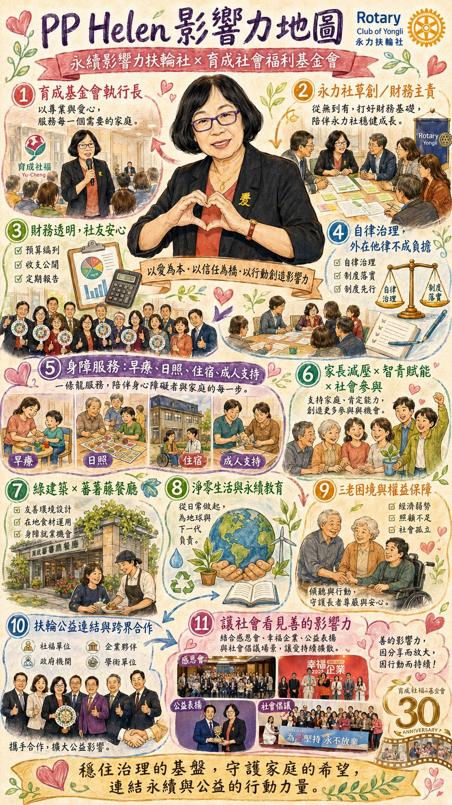

Ms. Lai Kuang-lan currently serves as Managing Director and Chief Executive Officer of the Yu Cheng Social Welfare Foundation. She holds a master's degree in special education from St. Joseph's University in Philadelphia, USA, and has held important positions including Director of the Taipei Yongming Development Center and Director of the Taipei Private Yu Cheng Yumin Development Center.
Yet the starting point of her impact came not from titles, but from her identity as a mother.
As the parent of a child with Down syndrome, she thought deeply during her studies in the USA. When parents grow old, where does the future of people with disabilities lie?
After returning to Taiwan in 2001, she devoted herself to advocacy and care services on disability issues, and became one of the founding members of the Yu Cheng Foundation. Over the years, she has not only built service systems, but constructed a kind of institutional safety net, so that people with disabilities and their families can live with peace of mind.
Many parents face the "dilemma of three elders", the anxiety woven from aging parents, aging children, and aging caregivers. That fear of passing before one's own child is secure is a profound life lesson she understands deeply.
Her public service has never been charity-style giving, but an institutional response.
The Yu Cheng Foundation has nearly a thousand employees, more than half of whom are middle-aged or older. While most organizations view "age" as a cost, Lai Kuang-lan regards the middle-aged and older as a stable asset.
She points out that organizations serving people with intellectual disabilities most fear frequent staff turnover, because those they serve are accustomed to familiar interpersonal relationships, and once these change, both emotions and learning are affected.
Stability is not conservatism. Stability is a choice to take responsibility for the vulnerable.
In the Club, she serves in a financial role and as a director. Such a role is easily underestimated. But in fact, financial governance is the foundation of organizational transparency and trust.
Her style is:
"Do self-disciplined governance well, and external regulation will not become a burden."
This belief makes the Club's financial system clear, open, and traceable. For members without a financial background, this is a form of reassurance. Within an impact management framework, this belongs to the key pillar of Governance. Without financial transparency, sustainability cannot stand.
Her representative act was not a financial reform, but a decision about space.
When the Yu Cheng Foundation renovated its sheltered restaurant, it set up a new meeting room. She proactively offered that meeting room as the venue for the Club's future regular meetings.
What seems a simple loan of a venue is in fact profoundly meaningful:
With one decision, she connected the club to the front line of public service.
She emphasizes the importance of supervisors leading by example, forming a culture of mutual trust through open discussion. This way of leading is not forceful, but inclusive.
At Yu Cheng: no competition, no claiming credit; intergenerational inclusion of young, middle-aged, and silver-haired; professionalism respected.
A psychologically safe workplace. And psychological safety is the most important sustainability condition for a service-oriented organization.
Her professional background is in special education. This means she understands difference, pace, patience, and companionship.
These qualities also translate into her governance style. She does not seek quick gains. She values long-term planning. She believes "people" matter more than "systems," yet also knows that without systems, people cannot last.
She is the kind of person who is not content with doing just one good deed, but wants to make good deeds keep happening.
Her impact spans all three dimensions, but the core remains consistent: giving the vulnerable something to lean on.
In the Club, she is not the person at center stage. She is the person who keeps the stage stable.
Without her, a sustainable impact club might be lively, but not necessarily lasting.
Her life begins with motherhood. From special education toward institutional governance. From family anxiety toward social advocacy.
She proves one thing:
True love is not only giving, but building a structure that can endure.
Her impact is not loud. But it is profoundly far-reaching.